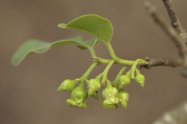
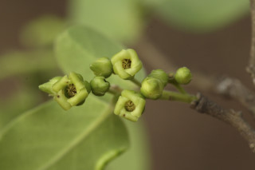
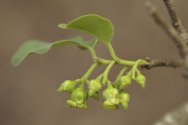
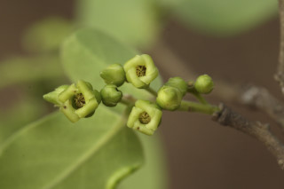

Trees up to 15 m tall.
15 ಮೀ. ಎತ್ತರದವರೆಗೆ ಬೆಳೆಯುವ ಮರಗಳು.
15 മീറ്റര് വരെ ഉയരത്തില് വളരുന്ന മരങ്ങള്.
மரம், 15 மீ. உயரம் வரை வளரக்கூடியது
Trunk often spinescent; bark grey, peeling off in to irregular flakes; blaze dull yellow.
ಕಾಂಡ ಹಲವು ವೇಳೆ ಮುಳ್ಳಿನಿಂದ ಕೂಡಿರುತ್ತದೆ;ತೊಗಟೆ ಬೂದು ಬಣ್ಣದಲ್ಲಿರುತ್ತವೆ; ಚಕ್ಕೆಗಳು ಅಸಮವಾಗಿ ಸುಲಿದು ಹೋಗುತ್ತವೆ;ಕಚ್ಚು ಮಾಡಿದ ಜಾಗ ಮಬ್ಬಾದ ಹಳದಿ ಬಣ್ಣದಲ್ಲಿರುತ್ತದೆ.
ചെറുമുളളുനിറഞ്ഞ തായ്ത്തടി; ക്രമരഹിതമായി അടര്ന്നിളകിപ്പോകുന്ന പുറംതൊലി; വെട്ട്പാടിന് മുഷിഞ്ഞ മഞ്ഞനിറം.
தண்டில் பொதுவாக முட்கள் காணப்படும்; மரத்தின் பட்டை பழுப்பு நிறமுடையது, பட்டை ஒழுங்கற்ற முறையில் உதிரக்கூடியது; உள்பட்டை மஞ்சள் நிறமுடையது.
Branchlets terete, slender, pubescent when young.
ಕಿರುಕೊಂಬೆಗಳು ತೆಳು ಹಾಗೂ ದುಂಡಾಗಿದ್ದು ಎಳೆಯದಾಗಿದ್ದಾಗ ಮೃದುತುಪ್ಪಳದಿಂದ ಕೂಡಿರುತ್ತವೆ.
ഇളതായിരിക്കുമ്പോള് രോമിലമായതും, നേര്ത്ത, ഉരുണ്ട, ഉപശാഖകള്.
சிறிய நுனிக்கிளைகள் வளையமானது, மெலிதானது, இளங்கிளைகளில் உரோமங்களுடையது.
Leaves simple, alternate, distichous; petiole to 0.5-1.0 cm long, canaliculate or planoconvex, pubescent; lamina 3-11 x 1.4-5 cm, usually ovate-oblong, apex acute or obtuse, base truncate to subcordate sometimes rounded, chartaceous, softly pubescent on both side when young, later glabrous; midrib flat or slightly canaliculate above; secondary_nerves 5-9 pairs, slender; tertiary_nerves broadly reticulate.
ಎಲೆಗಳು ಸರಳವಾಗಿದ್ದು ಪರ್ಯಾಯ ಹಾಗೂ ಸುತ್ತು ಜೋಡನಾ ವ್ಯವಸ್ಥೆ ಯಲ್ಲಿದ್ದು ಕಾಂಡದ ಎರಡೂ ಕಡೆಯ ಎದುರು ಬದರಿನ ಸಾಲಿನಲ್ಲಿರುತ್ತವೆ; ಎಲೆ ತೊಟ್ಟುಗಳು 0.5 -1 ಸೆಂ.ಮೀ ಉದ್ದವಿದ್ದು ಕಾಲುವೆಗೆರೆಸಮೇತ ಅಥವಾ ಸಪಾಟ ಪೀನ ಮಧ್ಯ ಆಕಾರದಲ್ಲಿರುತ್ತವೆ ಮತ್ತು ಮೃದುತುಪ್ಪಳದಿಂದ ಕೂಡಿರುತ್ತವೆ; ಪತ್ರಗಳು 3 – 11 X 1.4 – 4.5 ಸೆಂ.ಮೀ. ಗಾತ್ರ,ಸಾಧಾರಣವಾಗಿ ಅಂಡ-ಚತುರಸ್ರದ ಆಕಾರ,ಚೂಪಾದ ಅಥವಾಚೂಪಲ್ಲದ ತುದಿ ; ಚೂಪಾದುದರಿಂದ ಛಿನ್ನಾಗ್ರದಿಂದ ಹೃದಯಾಕಾರದ ಕೆಲವು ವೇಳೆ ದುಂಡಾದ ಬುಡ ,ಕಾಗದವನ್ನೋಲುವ ಮೇಲ್ಮೈ ಹೊಂದಿದ್ದು ಎಳೆಯದಾಗಿದ್ದಾಗ ಪತ್ರದ ಎರಡೂ ಬದಿಯಲ್ಲಿ ಮೃದುತುಪ್ಪಳವನ್ನು ಹೊಂದಿದ್ದು ನಂತರ ರೋಮರಹಿತವಾಗಿರುತ್ತವೆ; ಮಧ್ಯನಾಳ ಚಪ್ಪಟೆಯಾಗಿರುತ್ತದೆ ಅಥವಾ ಲಘುವಾದ ಕಾಲುವೆಗೆರೆಯನ್ನು ಹೊಂದಿರುತ್ತದೆ;ಎರಡನೇ ದರ್ಜೆಯ ನಾಳಗಳು 5 - 9 ಜೋಡಿಗಳಿದ್ದು, ತೆಳುವಾಗಿರುತ್ತವೆ; ಮೂರನೇ ದರ್ಜೆಯ ನಾಳಗಳು ತೆಳುವಾಗಿದ್ದು ವಿಶಾಲವಾದ ಜಾಲ ಬಂಧ ನಾಳವಿನ್ಯಾಸವನ್ನು ಹೊಂದಿರುತ್ತವೆ.
ലഘുവായ ഇലകള്, ഏകാന്തരമായി, തണ്ടിന്റെ രണ്ടുഭാഗത്തുമാത്രമായി അടുക്കിയവിധത്തില്; ചാലോട്കൂടിയതോ, ഒരുഭാഗം ഉയര്ന്നും മറുഭാഗം പരന്നുമിരിക്കുന്നതോ ആയ, രോമിലമായ, ഇലഞെട്ടിന് 0.5 സെ.മീ മുതല് 1 സെ.മീ വരെ നീളം; പത്രഫലകത്തിന് 3 സെ.മീ മുതല് 11 സെ.മീ വരെ നീളവും 1.4 സെ.മീ മുതല് 5 സെ.മീ വരെ വീതിയും, സാധാരണയായി അണ്ഡാകാര-ആയതാകകാരവുമാണ്, പത്രാഗ്രം നിശിതമോ ഉപകോണാകാരമോ ആണ്, പത്രാധാരം വെട്ടിമുറിച്ചതുപോലേയോ പ്രകൃതം, ഇളതായിരിക്കുമ്പോള് രണ്ടുഭാഗത്തും മുദുവായി രോമിലമാണ്, പിന്നീട് അരോമിലവും; മുഖ്യസിരമുകളില് പരന്നതോ ചെറുചാലോട് കൂടിയതോ ആണ്; നേര്ത്ത 5 മുതല് 9 വരെ ജോഡി ദ്വിതീയ ഞരമ്പുകള്; വീതിയേറിയ ജാലിക തീര്ക്കുന്ന ത്രിതീയ ഞരമ്പുകള്.
இலைகள் தனித்தவை, மாற்றுஅடுக்கமானவை, இருநெடுக்கு வரிசையிலையடுக்கம் (டைஸ்டிக்கஸ்); இலைக்காம்பு 0.5-1.0 செ.மீ. வரை நீளமானது, குறுக்குவெட்டுத் தோற்றத்தில் கேனாலிகுலேட் அல்லது பிளேனோகான்வக்ஸ், உரோமங்களுடையது; இலை அலகு 3-11 X 1.4-5 செ.மீ., பொதுவாக முட்டை வடிவம் - நீள்சதுர வடிவமுடையது, அலகின் நுனி கூரியது அல்லது மழுங்கியது, அலகின் தளம் சதுரமானது (ட்ரன்கேட்) முதல் சிறு இதய வடிவானது (சப்கார்டேட்) சிலவற்றில் வட்டமானது, சார்ட்டேசியஸ், புதிய இலைகளின் இருபரப்பிலும் மென்உரோமங்களுடையது; முதிர்ந்த இலைகள் உரோமங்களற்றது; மையநரம்பு அலகின் பரப்பிற்கு சமமானது அல்லது மேற்பரப்பில் சிறிதளவு பள்ளமானது; இரண்டாம் நிலை நரம்புகள் 5-9 ஜோடிகள்; மூன்றாம் நிலை நரம்புகள் அகன்ற வலைப்பின்னல் அமைப்பு கொண்டது.
Flowers unisexual, dioecious; male flowers greenish, in axillary cymes; female solitary, axillary.
ಹೂಗಳು ಏಕ ಲಿಂಗಿಗಳು; ಗಂಡು ಮತ್ತು ಹೆಣ್ಣು ಹೂಗಳು ಪ್ರತ್ಯೇಕ ಸಸ್ಯಗಳಲ್ಲಿರುತ್ತವೆ; ಗಂಡು ಹೂಗಳು ಹಸಿರು ಬಣ್ಣದಲ್ಲಿದ್ದು ಅಕ್ಷಾಕಂಕುಳಿನಲ್ಲಿನ ಮಧ್ಯಾರಂಭಿ ಪುಷ್ಪಮಂಜರಿಯಲ್ಲಿರುತ್ತವೆ;ಹೆಣ್ಣು ಹೂಗಳು ಅಕ್ಷಾಕಂಕುಳಿನಲ್ಲಿ ಒಂಟಿಯಾಗಿರುತ್ತವೆ.
പൂക്കള് ഏകലിംഗികളാണ്, ഡയീഷ്യസും; പച്ചനിറത്തിലുളള ആണ്പൂക്കള് കക്ഷീയ സൈമുകളിലുണ്ടാകുന്നു; പെണ്പൂക്കള് കക്ഷങ്ങളില്, ഒറ്റക്കുണ്ടാകുന്നു.
ஓர் பால் மலர்கள், ஈரகம் கொண்டவை; ஆண்மலர்கள் பச்சை நிறமுடையது, இலைக்கோணங்களில் காணப்படும் சைம்; பெண்மலர்கள் தனித்தவை, இலைக்கோண மொட்டுகளில் இருந்து தோன்றும்.
Berry, globose, to 2 cm across; seeds usually 4-8, sometimes 2, blackish-brown.
ಬೆರ್ರಿಗಳು ಗೋಳಾಕಾರದಲ್ಲಿದ್ದು 2 ಸೆಂ.ಮೀ.ವರೆಗಿನ ವ್ಯಾಸ ಹೊಂದಿರುತ್ತವೆ; ಬೀಜಗಳು ಕಪ್ಪು ಮಿಶ್ರಿತಕಂದು ಬಣ್ಣ ಹೊಂದಿದ್ದು ಸಾಮಾನ್ಯವಾಗಿ 4 ರಿಂದ 8 ರ ಸಂಖ್ಯೆಯಲ್ಲಿರುತ್ತವೆ ಕೆಲವು ವೇಳೆ ಎರಡು ಬೀಜಗಳಿರುತ್ತವೆ.
4 മുതല് 8 വരെ കറുപ്പുകലര്ന്ന തവിട്ടുനിറത്തിലുളള വിത്തുകളോട്കൂടിയ, ചിലപ്പോള് 2 എണ്ണം മാത്രമുളള കായ, 2 സെ.മീ വരെ കുറുകേയുളള, ഗോളാകാര ബെറിയാണ്.
முழுச்சதைகனி (பெர்ரி), உருண்டையானது, 2 செ.மீ. வரை குறுக்களவுடையது; விதைகள் பொதுவாக 4-8, சிலவற்றில் 2, கருப்பு கலந்த அரக்கு நிறம்.


 


